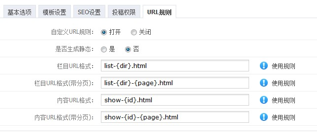
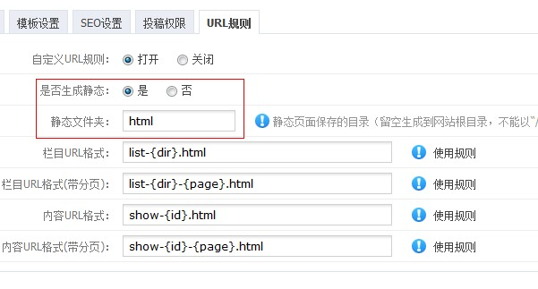
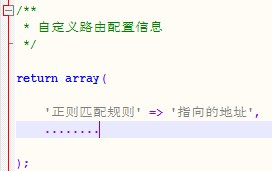
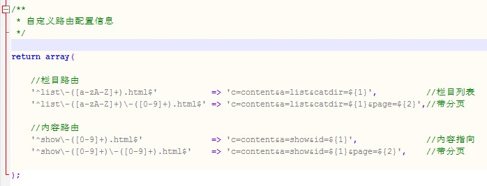

一、如何开启自定义URL
进入后台，“内容管理”-“栏目管理”，选择修改或者添加栏目，“URL配置”，开启“自定义URL规则”，再配置适合自己的规则。
二、规则标签说明
{dir} ： 表示栏目目录
{pdir}： 表示包含父级层次的栏目目录（不能与{dir}同时出现，两者二选一）
{page}：表示分页id
{id}： 表示内容或栏目的id
{y}： 表示年（内容规则中有效）
{m}： 表示月（内容规则中有效）
{d}： 表示日（内容规则中有效）
三、举例说明
在添加/修改栏目时候，会发现一个选项“URL设置”。

如上图，URL格式4项必填，填写规则有说明，然后保存之后更新缓存和URL地址。
记住一定要更新缓存并且更新URL地址，保障规则url生效。
这时你会发现：
“新闻（news）”栏目的地址已经变成了：http://localhost/finecms/news/china/
其“内容页面”的地址已经变成了：http://localhost/finecms/news/china/31.html
问题来了，你点这些地址，会不会发现会出现“404”错误或者是指向首页，这是为什么呢？解决方案有2种。
方案1、生成静态页面

这是静态生成的配置，“静态文件夹”是指静态文件生成的目录，当然也可以不填（留空）表示生成在根目录
（如果填写了“静态文件夹”，地址就会变成：http://localhost/finecms/静态文件夹/news/china/）
然后提交保存，再次更新缓存和URL地址，接下来即可生成页面了（不用说了，在“生成静态”中生成~）
注意：如果内容URL没有变化的话请“更新内容地址”
①、指向地址说明
栏目列表指向地址：index.php?c=content&a=list&catdir=栏目目录 或者 index.php?c=content&a=list&catid=栏目ID
栏目分页指向地址：index.php?c=content&a=list&catdir=栏目目录&page=分页 或者 index.php?c=content&a=list&catid=栏目ID&page=分页
内容页面指向地址：index.php?c=content&a=show&id=文章id
内容分页指向地址：index.php?c=content&a=show&id=文章id&page=分页
②、举例说明
栏目列表：http://www.demo.com/list-news.html （news是栏目目录）
栏目分页：http://www.demo.com/list-news-1.html （news是栏目目录，1是分页id）
内容页面：http://www.demo.com/show-1.html （1是文章的id）
内容分页：http://www.demo.com/show-1-1.html （前者1是文章的id，后者1是分页id）
伪静态方案一：修改服务器伪静态配置文件
以apache为例，修改.htaccess文件：
RewriteCond %{REQUEST_FILENAME} !-f
RewriteCond %{REQUEST_FILENAME} !-d
RewriteRule ^list-([a-z0-9A-Z]+).html$ index.php?c=content&a=list&catdir=$1 [L]
RewriteRule ^list-([a-z0-9A-Z]+)-([0-9]+).html$ index.php?c=content&a=list&catdir=$1&page=$2 [L]
RewriteRule ^show-([0-9]+).html$ index.php?c=content&a=show&id=$1 [L]
RewriteRule ^show-([0-9]+)-([0-9]+).html$ index.php?c=content&a=show&id=$1&page=$2 [L]
以iis为例，修改httpd.ini文件：
CacheClockRate 3600
RepeatLimit 32
RewriteRule ^(.*)/list-([a-z0-9A-Z]+)\.html$ $1/index.php?c=content&a=list&catdir=$2 [L]
RewriteRule ^(.*)/list-([a-z0-9A-Z]+)-([0-9]+)\.html$ $1/index.php?c=content&a=list&catdir=$2&page=$3 [L]
RewriteRule ^(.*)/show-([0-9]+)\.html$ $1/index.php?c=content&a=show&id=$2 [L]
RewriteRule ^(.*)/show-([0-9]+)-([0-9]+)\.html$ $1/index.php?c=content&a=show&id=$2&page=$3 [L]
以Nginx为例：
rewrite ^([^\.]*)/list-([a-z0-9A-Z]+)-([0-9]+)\.html$ $1/index.php?c=content&a=list&catdir=$2&page=$3 last;
rewrite ^([^\.]*)/show-([0-9]+)\.html$ $1/index.php?c=content&a=show&id=$2 last;
rewrite ^([^\.]*)/show-([0-9]+)-([0-9]+)\.html$ $1/index.php?c=content&a=show&id=$2&page=$3 last;
伪静态方案二：修改网站配置文件router.ini.php（Apache推荐）
当然这种方案的前提需要服务器开启伪静态并指向index.php，再次说一下方法，goooooo。
以apache为例，修改.htaccess文件：
RewriteCond %{REQUEST_FILENAME} !-f
RewriteCond %{REQUEST_FILENAME} !-d
RewriteRule !\.(js|ico|gif|jpg|png|css|swf)$ index.php [L]
然后根据上面你自定义的路由格式来设计伪静态指向（一定要懂正则表达式）。
规则匹配文件config/router.ini.php （一定注意不能用记事本之类的工具修改）
规则格式图：

按照上面的例子，我们可以设计成如下匹配规则：

注意：伪静态方案二的指向地址不需要再加index.php了